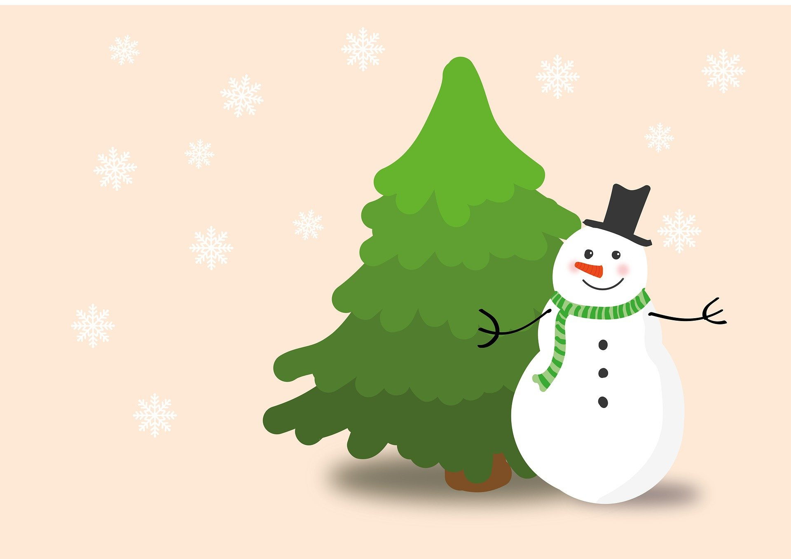

-
크리스마스에 눈이 온다면?! 눈 내리는 하늘에 온세상이 하얗게 변했다! 나무 사이사이에는 선물이 가득한데 (HTML, SCC, Jvascript 실전예제)
드림코딩 by 소미
5K views
-

눈이 오는 겨울에는 역시 눈사람을 만들어봐야지! 눈사람만드는 방법과 따뜻한 겨울 보내기, 눈이오는 청명한 밤 (HTML, CSS, Javascript 실전예제)드림코딩 by 소미65k views
-
새로운 가을을 맞이하며 형형색색 물든 단풍잎을 파헤치자! 붉은 단풍을 보면 떠오르는 것은? 가을 산행 주의점과 제대로 즐기는 방법 (HTML, CSS, Javascript 실전예제)드림코딩 by 소미72K views